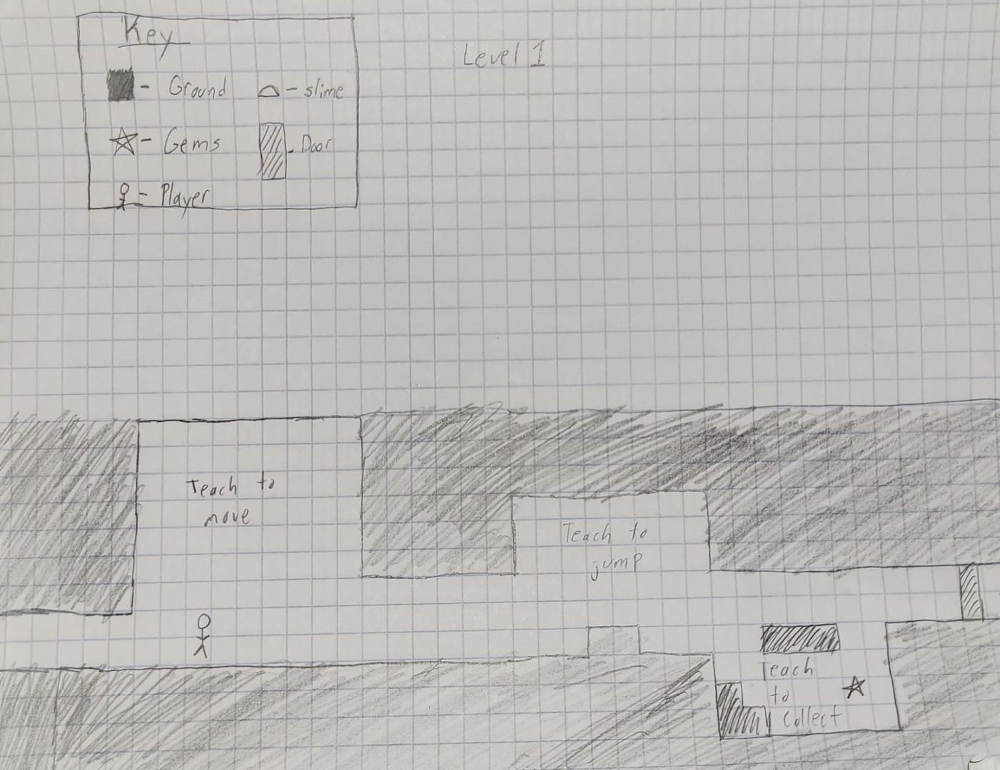
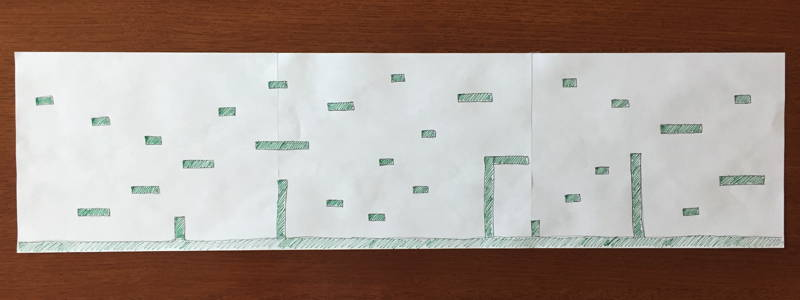
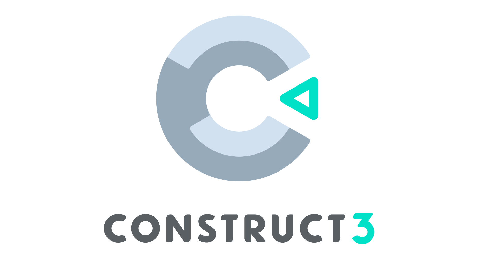

Many games start out looking nothing like their final designs. Designing and creating a finished mechanic that isn't fun takes a lot of time and money. To avoid this, developers and studios create quick and unpolished prototypes to test if a mechanic is fun, if the user experience is good, if the art direction is good and so much more.
How to create a quick prototype?
Prototyping can be an art in itself and there is no one way that fits all to create a prototype. However here are some suggestions on how to create a prototype:
-
Using Paper & Pencil for Prototyping
 
Paper prototypes are quick and easy to make, need no technical skills, and are easy to evaluate and change if something doesn't feel right. An example of a paper prototype can be drawing out levels and using dice for any randomness that the game may occur. -
Using simple game engines

Game Engines such as Construct 3 or Clickteam Fusion 2.5 can cut down prototype development time and can help in creating prototypes because they offer many tools to rapidly test ideas, unlike complex game engines such as Unity, which require a lot more code to produce similar results.